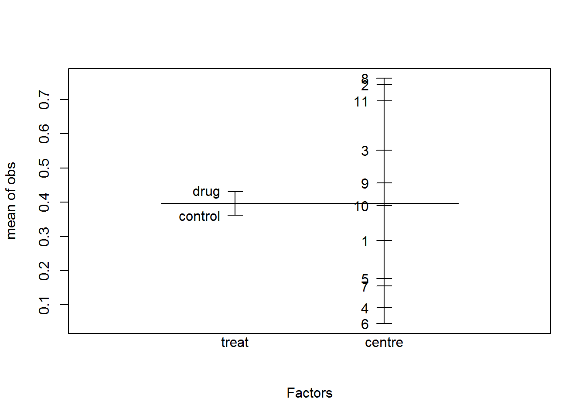
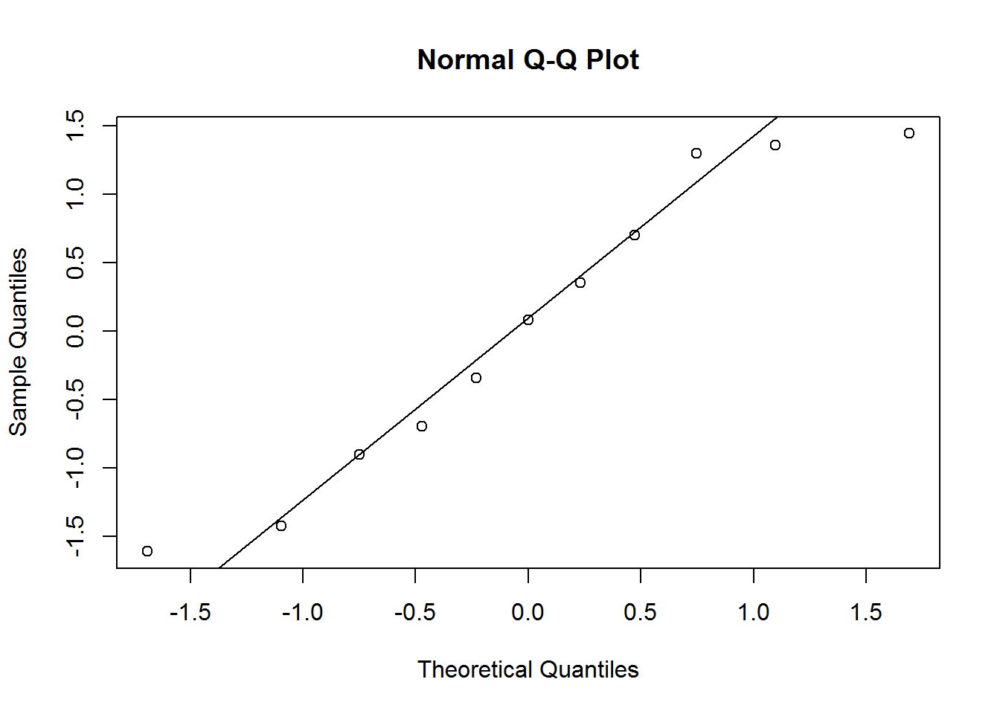
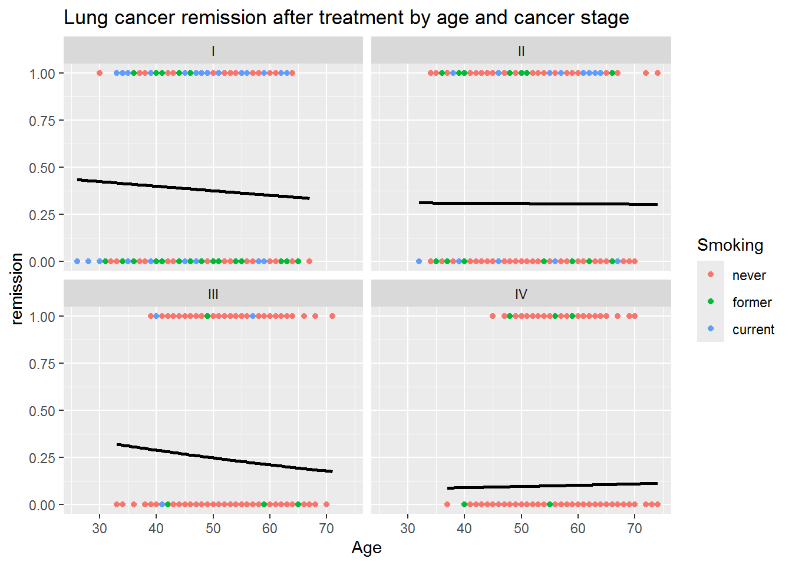

Data from a clinical trial, involving 2 treatments (control and active drug), conducted at 11 randomly selected centres are discussed by Beitler and Landis (1985). For the \(i\)-th center and \(j\)-th treatment, the proportion of \(n_{ij}\) patients having a positive response (\(y_{ij}\)) is recorded below (material extracted from Gallagher, 2023):
Centre
Treatment
\(y_{ij}\)
\(n_{ij}\)
1
drug
11
36
1
control
10
37
2
drug
16
20
2
control
22
32
3
drug
14
19
3
control
7
19
\(\ldots\)
\(\ldots\)
\(\ldots\)
\(\ldots\)
1. Load the data intored in the multicentre.txt file, convert centre variables to factor, and make a descriptive plot to visualize differences between treatments and/or centers.
centre treat y n obs
1 1 drug 11 36 0.3055556
2 1 control 10 37 0.2702703
3 2 drug 16 20 0.8000000
4 2 control 22 32 0.6875000
5 3 drug 14 19 0.7368421
6 3 control 7 19 0.3684211
We observe systematic differences between centres.
2. Which variable should be included as a fixed effect, and which as a random effect? Make a design plot to visually compare the magnitude of the effects of the centre and treat factors.
We want to compare these particular treatments (experimental factor), so we use fixed effects for the treat factor.
The eleven centres represents a random sample from the population about which we wish to make inferences (random factor), so we use random effects to model the center factor.
plot.design(obs ~ treat*centre, data=multicentre)

Average observed probabilities for each level of the factors treat and center
We see that the variability associated with the treatment is much lower than the variability associated with the centres.
We also see that the average probability of a positive response is higher in the active drug treatment.
3. Write the mixed logistic regression model equation.
\(\pi_{ij}\) is the probability of a favourable outcome in a patient on the \(i\)-th centre and \(j\)-th treatment
\(x_{ij}\) is an indicator variable for treatment (0=control, 1=active drug)
\(u_i\) is a random variable associated with the \(i\)-th centre
4. Test if random effects are necessary.
## Fit the models ##library(lme4)M0 <-glm(obs ~1+ treat, family="binomial", weights=n, data=multicentre)M1 <-glmer(obs ~1+ treat + (1|centre), family="binomial", weights=n, data=multicentre)## LRT for the variance component sigma2_u ##LRT <--2*(logLik(M0)-logLik(M1))mean(1-pchisq(LRT,df=c(0,1)))
[1] 3.885781e-15
## We can also use the AIC/BIC to compare the models ##data.frame(AIC=c(AIC(M0), AIC(M1)),BIC=c(BIC(M0), BIC(M1)),row.names=c("multicentre.glm","multicentre.glmer"))
We conclude that the treatment effect is not statistically significant.
6. Using the model with fixed and random effects, which is the probability of a positive response on the active drug group? Interpret the odds ratio \(e^{\beta_1}\) and compute a 95% confidence interval.
library(emmeans)
Welcome to emmeans.
Caution: You lose important information if you filter this package's results.
See '? untidy'
$emmeans
treat prob SE df asymp.LCL asymp.UCL null z.ratio p.value
control 0.359 0.0892 Inf 0.208 0.545 0.5 -1.497 0.1345
drug 0.376 0.0911 Inf 0.220 0.564 0.5 -1.301 0.1932
Confidence level used: 0.95
Intervals are back-transformed from the logit scale
Tests are performed on the logit scale
$contrasts
contrast odds.ratio SE df asymp.LCL asymp.UCL null z.ratio p.value
drug / control 1.08 0.186 Inf 0.768 1.51 1 0.433 0.6651
Confidence level used: 0.95
Intervals are back-transformed from the log odds ratio scale
Tests are performed on the log odds ratio scale
For \(u_i=0\), the probability of a positive response over a population of centres under the active drug group (\(x_{ij}=1\)) is \(\hat{\pi}_{ij}=0.376\) with a 95% confidence interval of \([0.220, 0.564]\).
The estimated odds of a patient showing a positive response on the active drug group relative to the control group is 1.08 with a 95% confidence interval of \([0.77, 1.51]\).
7. Using the best model, verify whether the model assumptions on the random effects are satisfied.
Model <- M1arand <-unlist(ranef(Model)$centre)qqnorm(rand)qqline(rand)

shapiro.test(rand)
Shapiro-Wilk normality test
data: rand
W = 0.93053, p-value = 0.4162
We don’t reject the null hypothesis of normality of the random effects.
8. Which is the estimated variance and 95% confidence interval of the within-centre random effect? Compute and interpret the intra-class correlation coefficient.
VarCorr(Model)
Groups Name Std.Dev.
centre (Intercept) 1.1692
confint(Model, parm="theta_")
Computing profile confidence intervals ...
2.5 % 97.5 %
.sig01 0.709846 2.060211
We can compute the intra-class correlation coefficient as \[\rho=\frac{\sigma^2_u}{\sigma^2_u+3.29}=1.169^2/(1.169^2+3.29) = 0.29347,\] which means that 29% of the overall variability can be attributed to the differences between centres.
9. Compute the predicted probabilties of a positive response for each value of the dataset. Include those estimated probabilities in the descriptive plot of section 1).
centre treat y n obs pred
1 1 drug 11 36 0.3055556 0.3337400
2 1 control 10 37 0.2702703 0.3337400
3 2 drug 16 20 0.8000000 0.5178894
4 2 control 22 32 0.6875000 0.5178894
5 3 drug 14 19 0.7368421 0.4391549
6 3 control 7 19 0.3684211 0.4391549
Observed (dots) and predicted (asterisks) probabilities of a positive response for each centre
Exercise 2
A Health Maintenance Organization wants to know what patient and physician factors are most related to whether a patient’s lung cancer goes into remission after treatment as part of a larger study of treatment outcomes and quality of life in patients with lung cancer.
The data has a multilevel structure where 8525 patients are nested within 407 doctors, who are in turn nested within 35 hospitals. The dataset contains either individual-level, doctor-level and hospital-level explanatory variables:
remission: response variable (0=no, 1=yes)
age: age of the patient (in years)
IL6: Interleukin-6 concentration in blood (pg/ml)
CRP: C-reactive protein concentration in blood (mg/dl)
LengthofStay: duration of a patient’s hospital stay (in weeks)
CancerStage: lung cancer stage (I, II, III or IV)
Smoking: is the patient a smoker? (1=never, 2=former, 3=current)
ID.doctor: ID of the doctor
ID.hospital: ID of the hospital
1. Load the data intored in the Patients.txt file. Convert ID.doctor and ID.hospital variables to factor.
ggplot(patients, aes(x=Age, y=remission, color=Smoking)) +geom_point() +stat_smooth(method="glm", color="black", se=FALSE,method.args =list(family=binomial)) +ggtitle("Lung cancer remission after treatment by age and cancer stage") +facet_wrap(~ CancerStage)

3. Test if random effects are necessary.
4. Hypothesis test for the fixed effects
5. Fit the final logistic mixed model and write its equation. Compute intra-class correlation coefficient(s).
6. Verify wether the model assumptions are satisfied
7. Examine the model results
8. Compute predicted probabilities of remission in lung for different patient characteristics attended by ID.doctor=2 in ID.hospital=1.